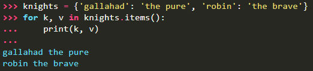

When looping through dictionaries, the key and corresponding value can be retrieved at the same time using the items() method.

When looping through a sequence, the position index and corresponding value can be retrieved at the same time using the
enumerate() function.

To loop over two or more sequences at the same time, the entries can be paired with the zip()
function.

To loop over a sequence in reverse, first specify the sequence in a forward direction and then call the
reversed() function.

To loop over a sequence in sorted order, use the
sorted() function which returns a new sorted list while leaving the source unaltered.

Using
set() on a sequence eliminates duplicate elements. The use of
sorted() in combination with
set() over a sequence is an idiomatic way to loop over unique elements of the sequence in sorted order.